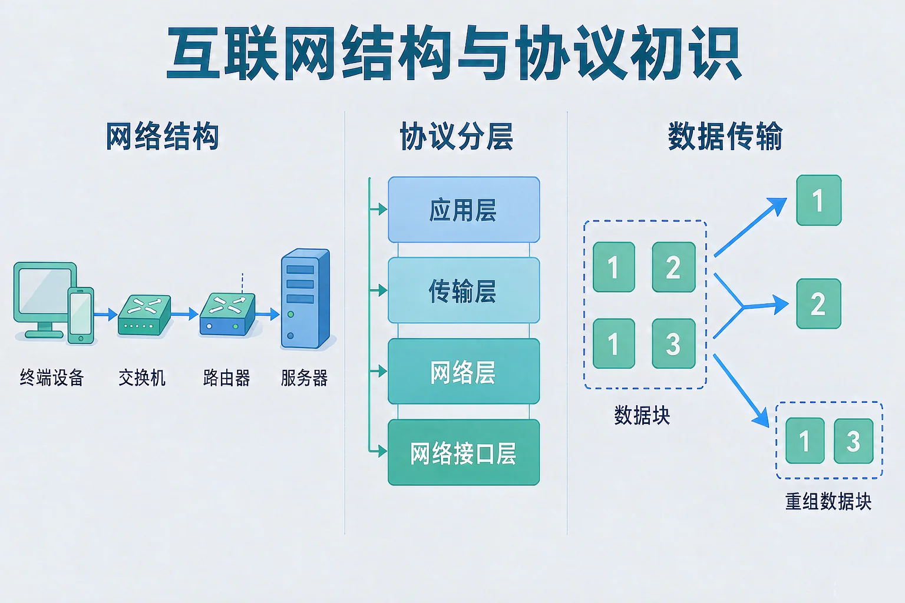
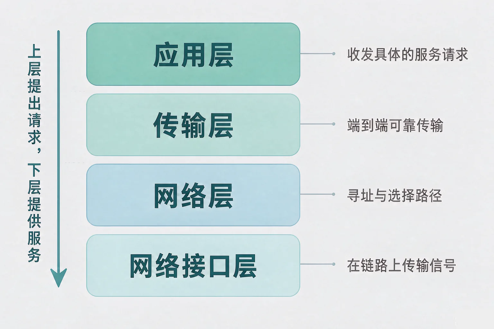
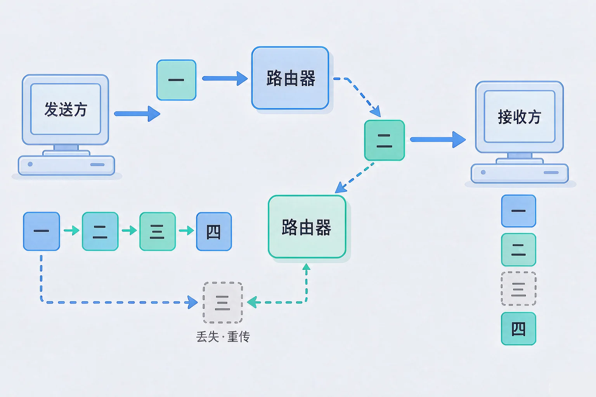

Gallery
v1.0.0 · skill v7.22.0
初中七年级 · 互联网应用与创新
你按了一下发送，数据穿过看不见的网络到达另一台机器——它到底走了哪条路，按什么规则走？

选一个你真正好奇的问题，后面的实验都会围着它转。
选择或输入后，这节课会围绕你的问题展开。
先凭直觉选一个，选完立刻看到解释——错了也没关系，正好知道要重点听哪里。
1. 关于「互联网」，下面哪种说法更准确？
互联网的名字本来就说明了它的结构：网络与网络互联。任何一台机器都只是其中一个节点。错因提醒：把互联网想成一台大机器，是最常见的一类误解，它会让你在后面理解转发与寻址时处处卡住。
2. 通信双方要能互相听懂，最不能缺的是什么？
只要双方遵守同一套协议，用什么设备、什么线路都能互通——这正是协议存在的意义。
3. 为什么要把网络通信的规则分成好几层，而不是写成一大本？
分层是一种分工：上层向下层提出请求，下层为上层提供服务。某一层的技术更新了，其他层可以不动。这个问题先记在心里，等下我们看数据包的时候会用上。
为什么要学这一课？你已经知道，两台计算机之间可以互相传文件；但当联网的设备从两台变成几百万台，链路从一种变成几十种，但真正的问题出现了：谁规定怎么开口、怎么找路、出错了怎么办？所以需要一套共同遵守的规则（协议），并且把它分层，让每一层只解决一件事。这就是网络工程师每天打交道的对象。
互联网：网络的网络
终端设备连到本地网络，本地网络通过路由器接入更大的网络。你发出的数据不会走一条专属的线，而是被一段一段接力送过去。
协议：共同遵守的规则
协议规定了数据长什么样、按什么顺序交换、出了错怎么处理。只要遵守同一套协议，不同设备、不同线路都能互通。

🔍 深层理解 换个角度再看一遍这件事，看看能不能说出背后的原理。
拆开它：任何一次通信都能拆成同一条链条：上层说要做什么 → 下层负责把这件事送到 → 到了对面再一层层交回去。
解释它：为什么必须分层？因为下层一改，全世界的设备都要跟着改。分层把变化关在了一层的门里。
迁移它：打电话、寄信、点外卖背后也是同样的分层协作——每一层只需要把自己的那一件事做对。
先选要发送的数据量，再点「发送数据」。打开丢包开关，你会看到其中一个包在路上丢掉之后，整个流程是怎样补救的。
点「发送数据」开始。
数据不是一整条直接过去的。它被切成许多数据包，每个包自带包头，包头里写着目的地址和序号。
包头里有什么
源地址、目的地址、序号。地址告诉网络这个包要去哪里，序号让接收方知道该把它排在第几位。
路由器做什么
路由器连接着不同的网络。它只看包头里的目的地址，决定下一跳交给谁，并不需要知道完整路线。

不少同学误认为数据是「一整条」从出发地直达目的地的，还误认为路由器上存着一张完整的地图、知道全程怎么走。事实是：每个包只带着目的地址上路，每一台路由器只负责把它交给更接近目的地的下一跳。
还有一件必须知道的事：数据包要经过许多台不属于你的设备才能到达对面。如果内容是明文，任何一台设备上都能被读取。所以承载敏感信息的传输必须加密——这也是安全传输协议存在的根本原因。
机器之间只认地址里的数字，可我们输入的是域名。先看这一次翻译是怎么完成的，再看数据包实际要走几跳。
① 选一个域名
题目：一间机房里，一台机器能打开校内的共享文件夹，却怎么也打不开外网的一个网站。请判断问题最可能出在哪一层，并说明你的排查过程。
第一步 看清现象：局域网内通，出外网不通。这说明本机和本地网络这一段是好的。
第二步 先查更靠下的层：本机地址、掩码、默认网关是否配置正确；网关能不能回应。
第三步 再往上查：网关既然通，就检查域名解析。结果发现向域名服务器发出的查询一直没有回应。
第四步 定位并修复：问题出在域名解析这一层——域名服务器地址配置错了。改成正确的地址后重新解析，页面立刻就能打开。
最容易犯的错是一上来就重启设备，或者直接下结论「断网了」。还有人误认为「能打开校内共享文件夹，就说明网络没问题」——其实局域网通只证明最下面两层是好的，上面几层完全没有验证过。排查网络问题的正确姿势是自下而上、逐层排除：下层不通，上层必然不可用；下层通了，才轮到查上层。
先凭直觉选一个，选完立刻看到解释——错了也没关系，正好知道要重点听哪里。
1. 下面哪句话是正确的？
分包的意义正在于此：出错时只补发受影响的那一小块。错因提醒：很多同学误认为数据包会按发送顺序、走同一条路到达；实际上它们可以各走各的，靠序号在目的地重排。
2. 路由器决定把一个数据包往哪里送，主要依据是：
路由器只看目的地址，选一个更接近目的地的下一跳，不需要读懂包里的内容。错因提醒：容易误认为路由器要打开包看内容才能转发——如果需要看内容，那加密传输就没法实现了。
3. 有人把网页地址换成了另一台服务器的地址，页面就打不开了。如果只能改一个地方，最该先检查的是：
域名要先被翻译成地址，包才谈得上往哪里送。翻译错了，后面的路全错。错因提醒：遇到「打不开」就断定是线路问题，是常见的错误判断；这一次断的其实是上面那一层。
报修单：机房 3 号机打不开图书馆网站。你有四项检查权限，请按自下而上的顺序使用它们，找出断点在哪一层。
写下来，说给同桌听：你是按什么顺序检查的？为什么这个顺序比随机点开一项更省时间？如果把「检查三」放在第一步就点了，你会得到什么结论，又可能错过什么？
先凭直觉选一个，选完立刻看到解释——错了也没关系，正好知道要重点听哪里。
1. 看在线视频时画面偶尔卡一下，但聊天消息照常收发。最合理的解释是：
视频对时延和丢包比文字更敏感，同样的链路下，包多、量大的那一方先受影响。这正是分包与重传机制要做的事。
2. 同一间教室里，你的机器打不开某个页面，借来同桌的机器却能打开。最先该怀疑的是：
同一时间、同一网络下只有一台机器异常，说明公共部分（链路、网关、域名服务器）是好的，差异只在这台机器自己。错因提醒：把个别机器的问题当成全网故障，是排查时最常见的误判。
3. 一位同学说：「我知道目的地址是 203.0.113.42，所以我的机器一定知道全部路线。」这句话：
每一台路由器只需要知道自己该把包交给谁。谁都不掌握全程，但包依然能到——这就是逐段转发的妙处。
回到开头那一下发送：你按下的那一刻，应用层把内容交下去，传输层把它切成若干数据包并记下序号，网络层给每个包写上目的地址，网络接口层把它送上网线；接着一台台路由器只看地址、逐段接力，最后在对面按序号重排还原。整个过程没有人掌握全局，却准确完成了。
给别人讲一遍：请用「协议、分层、数据包、地址」这四个词，说清楚一条消息从你这里到对面经历了什么。
三层练习，做完第一、二层就算通关；第三层留给愿意继续探索的同学。
⭐ 基础巩固（必做）
⭐⭐ 能力应用（必做）
⭐⭐⭐ 迁移挑战（选做）
左边是学它之前要先会的，右边是学会之后可以继续探索的，下面是同一领域的伙伴知识。
图谱正在加载：首次进入需下载知识索引（约 1–3 秒），加载完成后本行会自动消失。